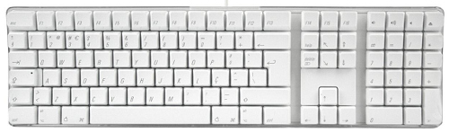
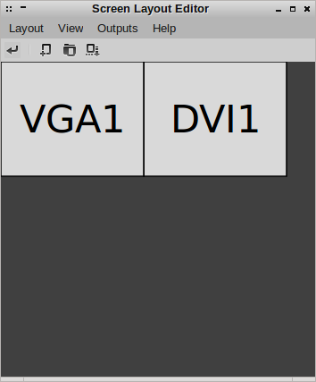

Three Crunchbang Linux Tips
As talked about previously, my main computers currently have the Crunchbang Linux distribution, which is a version of Debian GNU/Linux using the Openbox window manager.
These tips might also be useful for some other Debian or Ubuntu based systems.
Setting the keymap for an Apple keyboard
While laptops might need flat keys for portability (though I might argue the point), I hate typing on them. I like full-sized keys, not flaccid little flat ones.
I once bought an Apple Mac G4, I don’t use it anymore but I still use the keyboard I bought for it. Using Linux, it is not too much of a problem just to use the IBM layout without (i.e. remembering that the double quote mark is above the 2 key for example) but it is worth setting it properly in case someone else needs to use my computer.
I also have an Apple Macbook Pro laptop for work reasons which also has the same key layout.
Anyway, I edited the file called /etc/default/keyboard and set the following option:
XKBVARIANT="mac"
I am in Great Britain, so I also need to be sure that the following option is set:
XKBLAYOUT=”gb”
Maybe there was a way to change this using a graphical tool, but this way worked.
Creating screen layouts with ARandR
ARandR Screen Layout Editor is a wonderful tool for setting up your monitors. You can drag them around, change the resolution and rotate them in order to create your perfect screen layout.
To save the configuration, click on ‘Layout’ then ‘Save As’ to save a particular configuration.
You can reload this configuration within the program, but the configuration file is itself a simple shell script (which calls xrandr with arguments representing what you have picked in the GUI).
So to automatically configure your screen layout when the graphical session first starts, you can append the script to the file:
~/.config/openbox/autostart
The fact that a configuration is just a shell script means you can easily have multiple layouts for different situations, and either call them yourself on the command line, assign desktop shortcuts or use other tools to call them, e.g. you can use cron to change the screen configuration at a certain time or write an upstart/systemd script to execute it based on some system event etc.
Dealing with not-found commands
When using the command line in Ubuntu, if you try to call a command/program that has not been installed, it says something like:
The program 'tuxpaint' is currently not installed. You can install it by typing:
sudo apt-get install tuxpaint
Here is a more complicated example:
The program 'a2ensite' is currently not installed. You can install it by typing:
sudo apt-get install apache2.2-common
What actually happens here is a Python script appropriately named command-not-found is called which then looks up what package is needed to run the program.
If you want the same behaviour on Crunchbang, just do:
sudo apt-get install command-not-found
The problem with this utility on older hardware is when you accidentally make a typo that is actually a valid command somewhere, you get a second or so delay while it searches Apt’s cache, which could get annoying quite quickly.
If you want to search for a particular package, you can just use the pre-installed apt-cache command, e.g.:
sudo apt-cache search tuxpaint
All the packages to do with tuxpaint are listed in the terminal. However, this does not go down to the file level like command-not-found does. For example, the other example of a2ensite finds nothing:
sudo apt-cache search a2ensite
I don’t know a way of searching for a package by command using the stock Crunchbang install. However, you can install the apt-file package, which allows searches like:
apt-file search filename